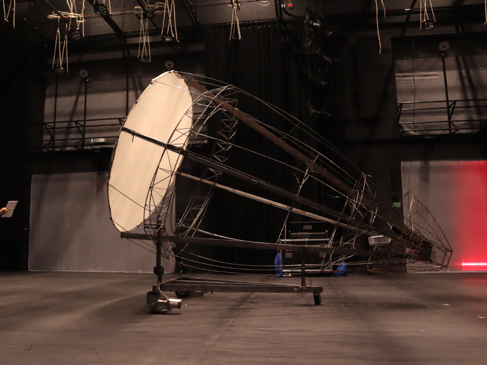
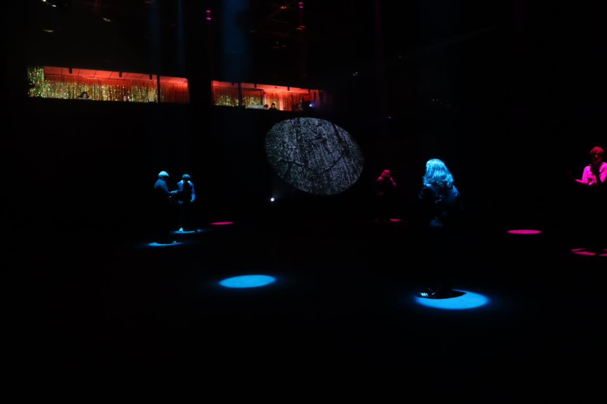
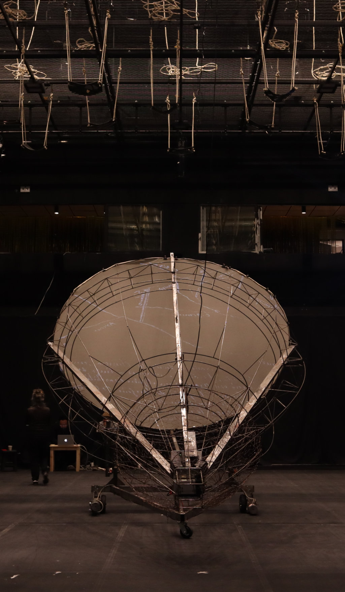
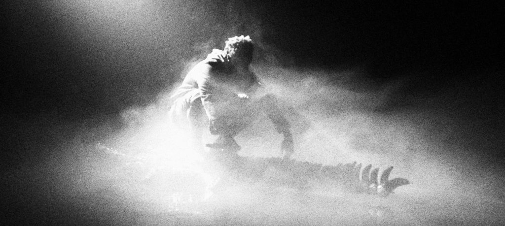
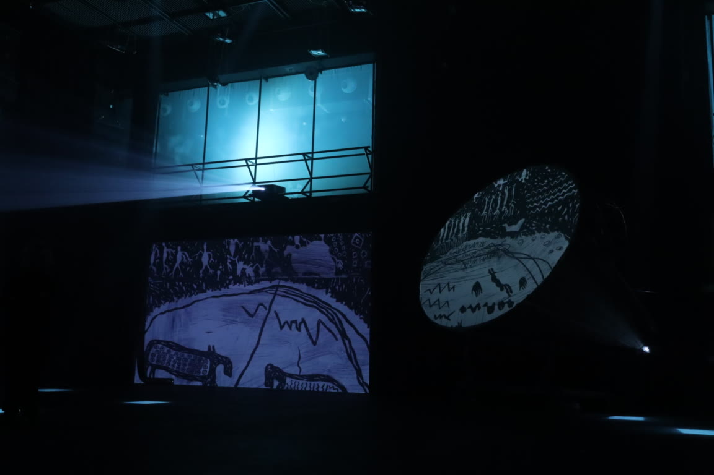
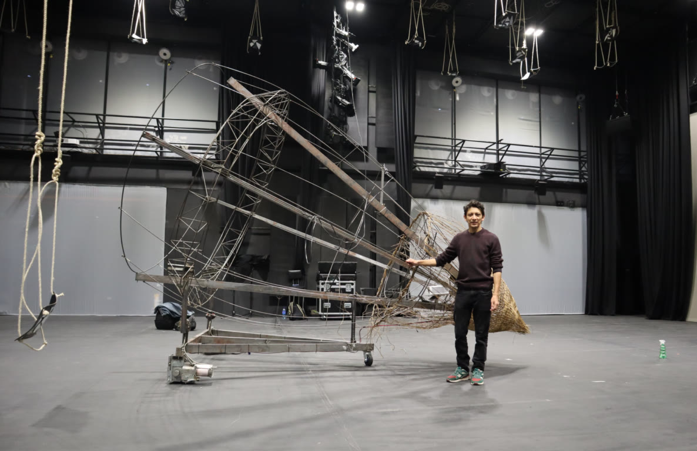
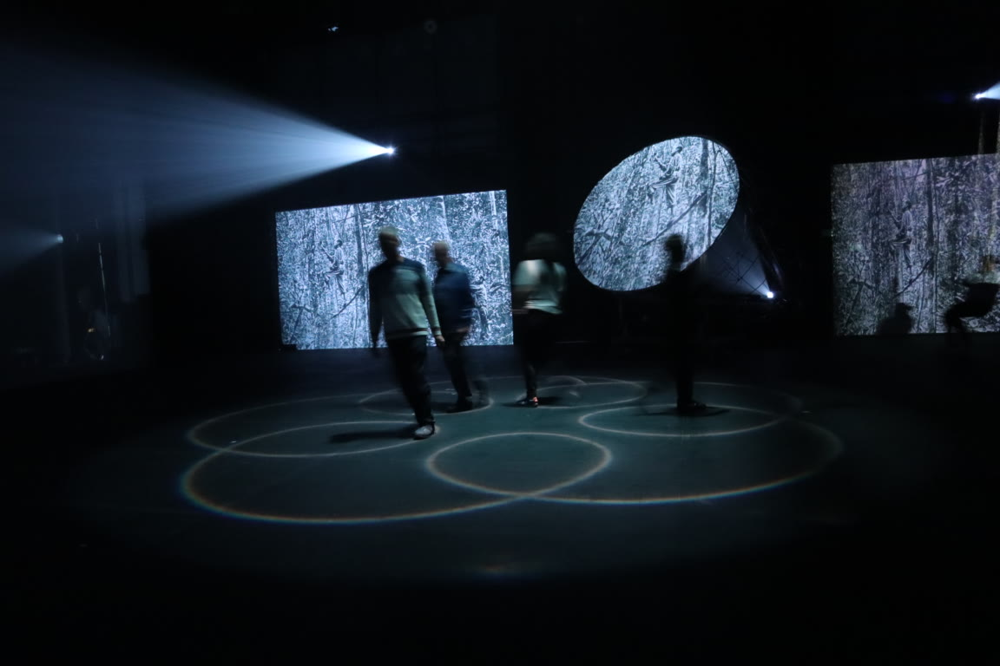
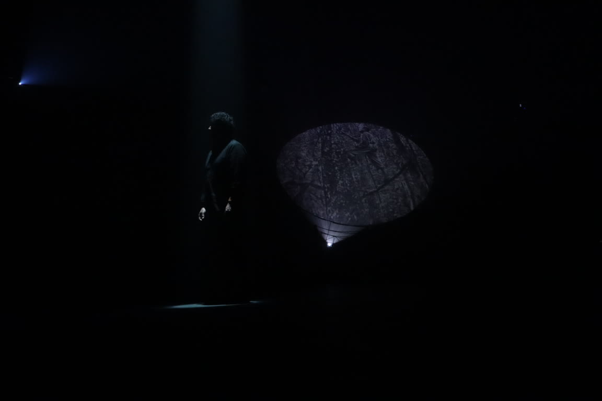

La Vorágine más allá
- Date
- 2024 – 2025
- Venue
- Sala Fanny Mikey, Centro Nacional de las Artes Delia Zapata Olivella, Bogotá. FIAV 2024 and 2025 season
- Role
- Design and implementation of the electronic interaction system for the mobile robotic organism; robotics programming and on-stage performance
- Technologies
- Raspberry Pi, C++
- Credits
- Mapa Teatro – Centro Nacional de las Artes
- Links

Live arts piece. I designed and implemented the electronic interaction system for the mobile robotic organism in La Vorágine más allá by the artists' laboratory Mapa Teatro, presented at FIAV 2024 and in a 2025 season.







